About
I'm a software engineer and computer scientist who loves fusing the humanities with the exact sciences, and art with technology.
By day I'm a senior engineer at NTT Data, working at XP Investimentos (Brazil's largest brokerage) on the card-benefits area: high-impact financial products built on microservices and distributed APIs, with a focus on scalability, observability, resilience and software quality. Before that, at Exato Digital, I worked remotely on KYC and background-check solutions for clients like Grupo Globo, GetNinjas, QuintoAndar, B3, Stone and Huawei.
I hold a BSc in Computer Science and a postgraduate degree in Applied Data Science from PUC Minas, and spent three years in CNPq-funded scientific research. On the side I teach and consult on C# and .NET, founded the "Clube de Leitura nas Montanhas" book club, live as a digital nomad, and build the tools, experiments and small games gathered below.
Projects
8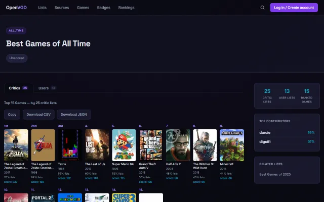
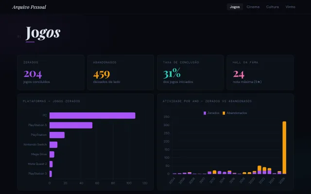
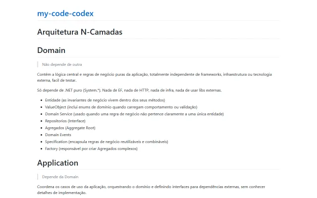
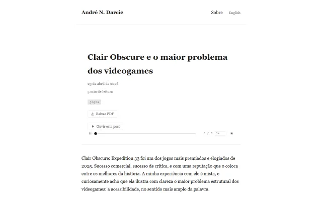
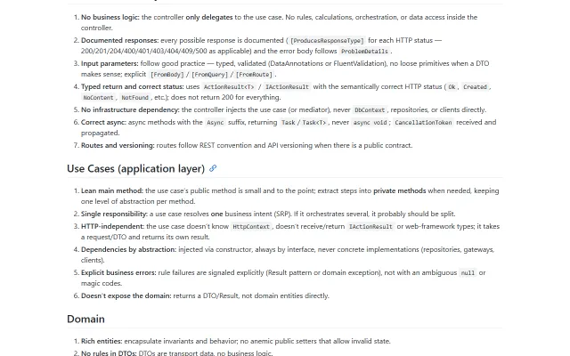
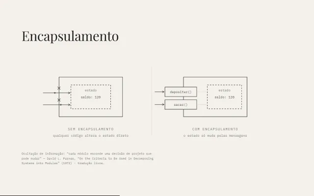
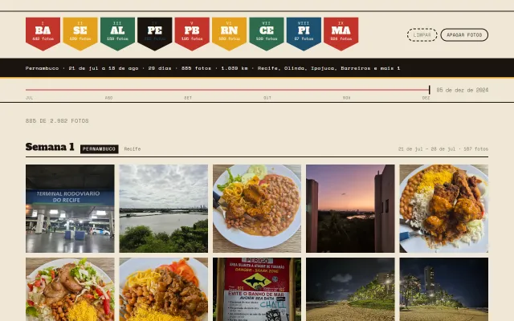
Writing
44- 2026Making of Tiny RPG Studio
- 2026TDD Is No Longer Optional in the World of AI Agents
- 2023Introducing Open Video Game Data
- 2023Python in one page
- 2026O mínimo que você precisa saber para desenvolver software com IA
- 2026A IA não vai pensar por você. E isso é uma coisa boa.
- 2026Claude Fable 5 me permitiu criar GTA em apenas um prompt.
- 2026Ideias Valem Muito Menos do Que Você Imagina
- 2026Agentes de IA exigem TDD: o passo a passo para aplicar na prática
- 2026Qwen3.5 rodando localmente: super rápido e com ótima qualidade
- 2026A IA fez o trabalho de vários membros da minha equipe
- 2025Gone Home: o jogo que destruiu as regras dos videogames
- 2025Entenda DDD de uma vez por todas, na implementação
- 2025Como modelar microserviços corretamente?
- 2025Quando NÃO usar microserviços
- 2025Me obriguei a assistir a 250 filmes clássicos do cinema
- 2024O Futuro do Blazor
- 2024Minha conclusão ao conhecer os "Design Patterns"
- 2024Primeiros Meses como Nômade Digital
- 2024Computação não depende da existência de computadores
- 2024Como falhar como desenvolvedor de games
- 2024A diferença entre desenvolvedor júnior, pleno e sênior
- 2023Criamos uma nova forma de avaliar jogos: Open Video Game Data
- 2023Aplicações que podem ser criadas com .NET
- 2023Validação de formulários com Blazor
- 2023Como ter um console de jogos trabalhando home-office mudou minha vida
- 2023Novidades no .NET 8 Preview 3
- 2023Minha jornada de uma década pelo .NET
- 2023Meu primeiro ano na Realidade Virtual - VR
- 2023Como realizar o deploy de uma aplicação ASP.NET no Heroku
- 2023Como adicionar banco de dados em uma aplicação .NET 7
- 2023Blazor United o futuro do .NET
- 2023O ciclo de vida do Playstation VR
- 2026Usar TDD deixou de ser opcional no mundo dos agentes de IA
- 2025[Dúvida] Experiência com Microservices é essencial para um backend pleno/sênior?
- 2024Finalmente, a I.A. deixou de ser apenas um chat e aprendeu a usar o computador!
- 2024Ajude a votar! Proposta de Lei para Incentivo ao Home Office
- 2024Computação não depende da existência de computadores
- 2024Como falhar como desenvolvedor de games
- 2024A diferença entre desenvolvedor júnior, pleno e sênior na minha opinião
- 2023Pitch: Criamos uma nova forma de avaliar jogos: Open Video Game Data
- 2023Como ter um console de jogos trabalhando home-office mudou minha vida
- 2023Meu primeiro ano na Realidade Virtual - VR
- 2023Blazor United o futuro do .NET
Games
Making small games is a hobby of mine.
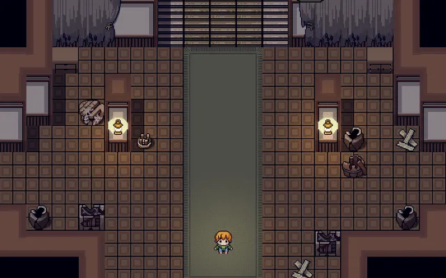
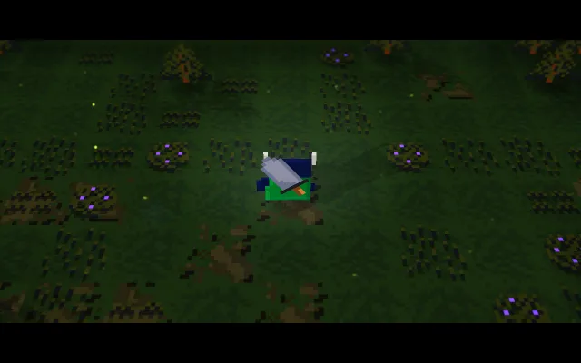
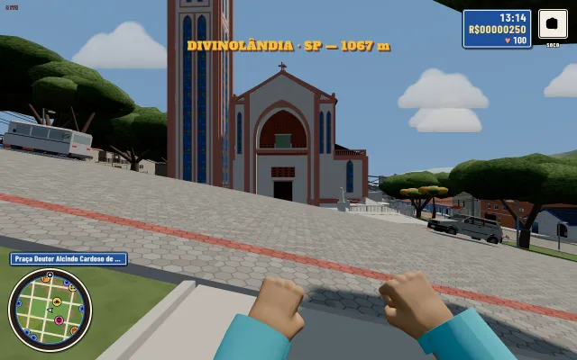
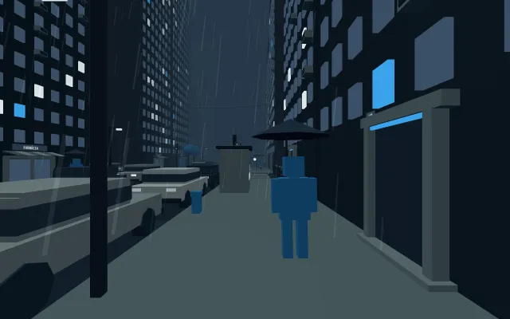
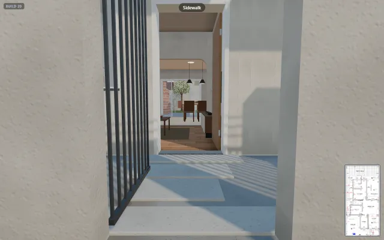
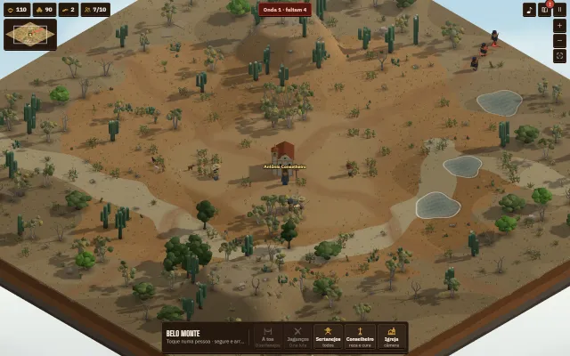
Tests & prototypes
24Rough experiments, game-jam entries, course work and one-off builds, kept here for the record.